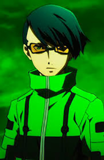

Antagonists // Strega
Takaya Sakaki
Takaya is the leader of Strega, a group of rogue Persona-users with the intent of protecting the Dark Hour and summoning Nyx. Due to inhumane experiments done to him throughout his younger years, he no longer has long to live in this world, and would like to see it destroyed as a result of those experiments. So, now he only lives for the moment of things, and has no sense of self-preservation or preservation of others, including Chidori and Jin.

Jin Shirato
Jin is Takaya's right-hand man, though he does show a frightful amount of admiration towards him, to the point of zealousy. Despite this, Jin shows to be quite intelligent, being the information gatherer of Strega and web author of the Revenge Request website - a website that Strega themselves came up with in order to envoke assassinations. He is very adept at locating their victims. Although, despite his intelligence, Jin is shown to have a very aggressive disposition as well as sharing the same misanthropic views as Takaya, though he is more rational than the latter, acting as a voice of reason to Takaya's more impulsive behavior. He dislikes SEES, calling them hypocrites, though he never really gives a reason for this claim.
Chidori Yoshino
Chidori's personality is like a "gothic-lolita". She has a very soft-sounding voice and loves to draw. Chidori believes that only she can understand her own sketches. She fears attachment because she is afraid of loss and the pain that comes with it. Without a strong reason to live, Chidori is similar to Makoto when the viewer is introduced to him in that she is very indifferent to death; Chidori feels all death means is just "not waking up anymore". She is loyal to Takaya and Jin and always follows them to do illegal activities, even during their assassinations, although she doesn't really consider them close friends and only tags along with them because she has nowhere else to belong and they are Artificial Persona Users like her. She thinks of her Persona, Medea as her only friend, even though her Persona nearly killed her by strangling her.